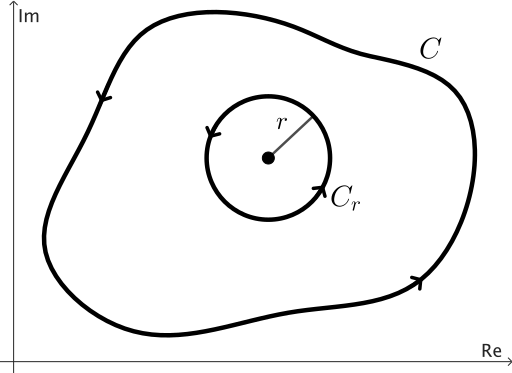

Fórmula Integral de Cauchy
Si $f$ es analítica en un dominio simplemente conexo $D$ y $z_0\in D$, el cociente $f(z)/(z - z_0)$ no está definido en $z_0$, lo que lo hace no analítico en $D.$ En consecuencia, el teorema de Cauchy-Goursat no nos permite concluir que la integral \[ \int_C \frac{f(z)}{z-z_0}dz, \] alrededor de un contorno cerrado simple $C$ que contiene a $z_0$, sea cero. Sin embargo, como veremos, el valor de esta integral es $2\pi i f(z_0)$. Este resultado es el primero de dos fórmulas notables.

Queremos mostrar que el valor de la integral en el lado derecho es \( 2\pi i f(z_0) \). Para hacerlo, sumamos y restamos la constante \( f(z_0) \) en el numerador del integrando:
Sabemos que \( \int_{C_r}\frac{1}{z-z_0}dz = 2\pi i \) (ver Ejercicio 1 en la sección del Teorema de Cauchy-Goursat), por lo que la ecuación (\ref{formula-01}) se convierte en:
Ahora, el hecho de que \( f \) sea analítica, y por lo tanto continua, en \( z_0 \), asegura que para todo \( \epsilon > 0 \), existe \( \delta > 0 \) tal que:
Elegimos el radio \( r \) del círculo \( C_r \) más pequeño que el valor \( \delta \) en la segunda de estas desigualdades. Dado que \( \abs{z-z_0}=r\lt \delta \) cuando \( z \) está en \( C_r \), se deduce que la primera de las desigualdades en (\ref{formula-03}) se cumple para \( z \) en esta condición. Luego, por la desigualdad ML, el valor absoluto de la integral en el lado derecho de la igualdad en (\ref{formula-02}) satisface:
Así, teniendo en cuenta la ecuación (\ref{formula-02}), tenemos:
Dado que el lado izquierdo de esta desigualdad es una constante no negativa que es menor que un número positivo arbitrariamente pequeño, debe ser igual a cero. Por lo tanto: \[ f(z_0)= \frac{1}{2\pi i} \int_C \frac{f(z)}{z-z_0}dz. \]
Ejemplo 1: Sea \( C \) el círculo \( |z|= 2. \) Para calcular la integral \[ \int_C \frac{z^2-4z+4}{z+i}dz \] notamos que \( f(z) = z^2-4z+4 \) es analítica en todos los puntos dentro y sobre el contorno \( C. \) Como el punto \( z_0=-i \) está en el interior de \( C \) (ver Figura 2), por la fórmula integral de Cauchy, obtenemos
Retrato de fase para mostrar
el retrato de fase mejorado de \( f(z)=\dfrac{z^2-4z+4}{z+i}, \) con curvas de nivel del módulo.
Ejercicio 1: Demuestra que \( \ds \int_C \frac{z}{z^2+9}dz = \pi i, \) donde \( C \) es el círculo \( \abs{z-2i}=4. \)
Una extensión de la fórmula integral de Cauchy
La fórmula integral de Cauchy en el Teorema 1 puede extenderse para proporcionar una representación integral de las derivadas de \( f \) en \( z_0. \) Para obtener tal extensión, consideramos una función \( f \) que es analítica en todo el interior y en un contorno cerrado simple \( C, \) orientado positivamente. Luego escribimos la fórmula integral de Cauchy como \[ f(z)= \frac{1}{2\pi i} \int_C \frac{f(s)}{s-z}ds, \] donde \( z \) está dentro de \( C \) y \( s \) denota puntos sobre \( C. \) Si calculamos la derivada con respecto a \( z, \) encontramos \begin{eqnarray}\label{integral-derivative} f'(z)= \frac{1}{2\pi i} \int_C \frac{f(s)}{(s-z)^2}ds. \end{eqnarray} Para la segunda derivada tenemos \begin{eqnarray}\label{integral-derivative-02} f''(z) = f^{(2)}(z)= \frac{1}{\pi i} \int_C \frac{f(s)}{(s-z)^3}ds. \end{eqnarray}
Ejercicio 2: Usa la definición formal de derivada para verificar que \( f'(z) \) existe y que la expresión (\ref{integral-derivative}) es de hecho válida.
Pista
Nota que podemos escribir
También puedes usar el hecho de que \( f \) es continua en el contorno \( C, \) lo cual garantiza que existe \( M \gt 0 \) tal que \( f(z) \leq M \) para todos los puntos en \( C. \)
En general, podemos usar inducción para obtener la segunda fórmula notable:
lo cual puede ser reescrito como
Verificar (\ref{general-derivative}) es más complicado que los casos \( n=1 \) y \( n=2 \). Para más detalles, te recomiendo consultar el libro Theory of functions of a complex variable de Alekseĭ I. Markushevich (pp. 299-301).
Ejemplo 2: Queremos evaluar \[ \int_C \frac{z+1}{z^4+2iz^3}dz , \] donde $C$ es el círculo $\abs{z}=1.$
Nota que el integrando no es analítico en $z=0$ y $z=-2i.$ Sin embargo, solo $z=0$ está dentro del contorno cerrado, como se muestra en la Figura 3.
Phase portrait para mostrar
el retrato de fase mejorado de $f(z)=\dfrac{z+1}{z^4+2iz^3},$ con curvas de nivel del módulo.
Al reescribir el integrando como \[ \frac{z+1}{z^4+2iz^3} = \frac{\dfrac{z+1}{z+2i}}{z^3} \] podemos identificar $z_0=0,$ $n=2$ y $f(z) = \dfrac{z+1}{z+2i}.$ Entonces \[ f^{(2)}(z) = \frac{2-4i}{(z+2i)^3}, \] y por lo tanto, $f^{(2)}(0) = \ds\frac{i+2}{4}.$ Así, por (\ref{general-integral-der}) encontramos
Ejercicio 3: Sea $z_0$ cualquier punto interior a un contorno cerrado simple y orientado positivamente $C.$ Si $f(z) = 1,$ usando la expresión (\ref{general-integral-der}), demuestra que \[ \int_C \frac{dz}{z-z_0} = 2\pi i \] y \[ \int_C \frac{dz}{(z-z_0)^{n+1}} =0 \quad (n=1, 2, \ldots). \] Compara con el Ejercicio 1 en la sección del Teorema de Cauchy-Goursat.
Algunas consecuencias de la extensión
Una consecuencia inmediata, y también notable, de la extensión de la fórmula integral de Cauchy es la siguiente:
Podemos aplicar un argumento similar a la función analítica $f'$ para concluir que $f^{(2)}(z)$ es analítica, y así sucesivamente.
Como consecuencia, cuando una función $ f (z) = u(x, y) + iv(x, y)$ es analítica en un punto $z = (x, y),$ la diferenciabilidad de $f'$ asegura la continuidad de $f'$ allí. Entonces, dado que \[ f'(z) = u_x + iv_x = v_y - i u_y, \] las derivadas parciales de primer orden de $u$ y $v$ son continuas en ese punto. Además, dado que \begin{eqnarray*} f''(z)=& u_{xx} + iv_{xx} &= v_{yx} - i u_{yx},\\ & \vdots & \end{eqnarray*} también podemos concluir que las funciones reales $u$ y $v$ tienen derivadas parciales continuas de todos los órdenes en un punto de analiticidad.
Finalmente, otra consecuencia de la fórmula integral de Cauchy que será esencial en la siguiente sección.
Así, de (\ref{general-derivative}) y la desigualdad ML, tenemos